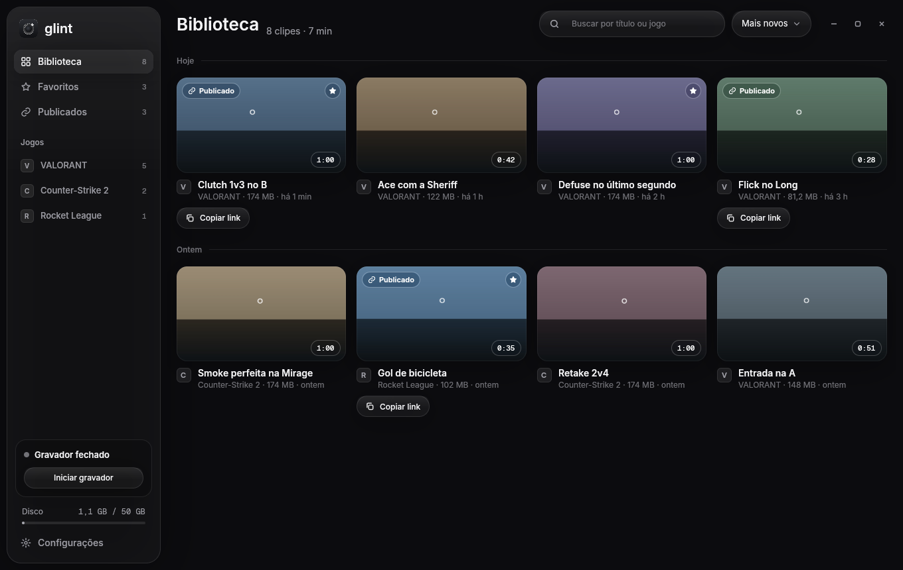

Game clips for Windows, without the weight.
Glint records in the background on your GPU. Press F8 and the last 60 seconds are saved in about 150 ms. One click turns the clip into a link that plays right inside Discord.
Free, MIT/Apache-2.0. Windows 10 and 11. No account needed.

Keeps the play. Leaves your FPS alone.
No feed, no ads, no mandatory account. Glint does the part that matters and stays out of the game.
Saves the last 60 seconds
The replay lives in memory, from 15 to 120 s. F8 writes it to disk in about 150 ms.
Clips each kill with F9
8 s before, 2 s after. Press again within 6 s and the next kill joins the same clip, marked x2, x3.
Encodes on the GPU
AMD AMF, NVIDIA NVENC or Intel QSV, HEVC 1080p60. The recorder uses about 1% CPU.
Never touches the game
No injection, no memory reading, no overlay. It records through Windows Graphics Capture, like Game Bar.
Splits game and mic
Game audio and microphone on separate tracks. Turn each one on or off in the player and when sharing.
Trims with instant preview
Drag the handles on the timeline. Library grouped by day, with favorites and search by title or game.
From the play to the chat in three steps
The recorder waits in the tray and starts by itself when a full-screen game uses the GPU.
Play
Glint finds the game on its own and keeps a rolling buffer. It stops when the game closes.
Press F8
The clip lands in Videos\Glint. The disk limit removes the oldest first, never favorites.
Publish and copy link
Only the trimmed part is exported as H.264, uploaded in parts and resumed if the connection drops.
Links that play inside Discord
Paste the link and the clip plays in the chat. Links run on your own small server on Cloudflare's free plan, deployed with one button.
- Your server, your clips. A Worker with D1 and R2; no shared Glint server.
- Three privacy levels: only me, anyone with the link, or public.
- Uploads wait while a game is open, so they never cost you ping.
- Rich Presence shows “Clipping VALORANT with Glint” on your profile.

Built in Rust, measured on real games
Capture and encoding run on the GPU's video block, separate from the part that draws your frames.
average FPS loss in the synthetic test
to save a clip after F8
HEVC, recorded on the GPU
accounts needed to record and export
Questions
The short answers. The rest is in the README.
Will it get me banned in VALORANT?
Glint records the window through Windows Graphics Capture, the API Xbox Game Bar uses, and never touches the game process. Tested with Vanguard on. No anti-cheat vendor has endorsed it, so use your own judgement.
Why does Windows show a SmartScreen warning?
The installer is not code-signed yet. Click More info, then Run anyway. Releases are built by CI from tagged commits, and the source is public.
Do I need the server?
No. Recording, trimming and Export MP4 work fully offline. The server is only for links that play in Discord.
Is a published clip public?
By default it opens only for people with the link. Switch it to only me or public at any time, or delete it from the server.
Does it run on Linux?
Not today. Glint is Windows 10 and 11 only; the system code is isolated so a port can come later.
What languages does it speak?
English and Brazilian Portuguese, following the Windows language. Strings live in translation files, so more can be added.
Your next clutch deserves a replay.
Per-user install, no admin rights. Updates are offered inside the app.